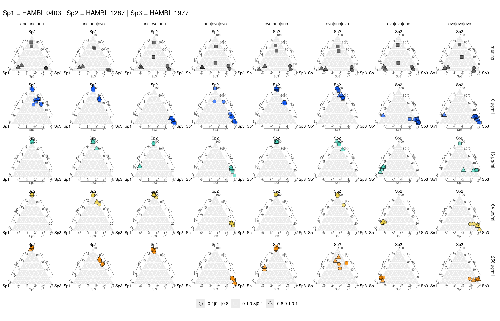
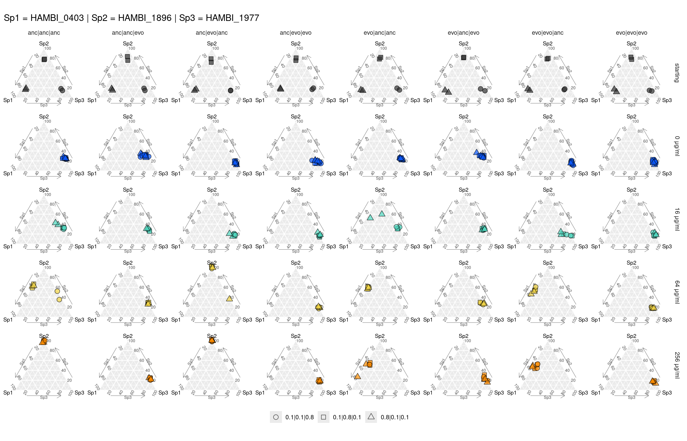

Figure 1: Compositions of all trios with species HAMBI_0403, HAMBI_1287, and HAMBI_1896 at 4 different streptomycin concentrations (0, 16, 64, and 256 μg/ml; grid columns) and the 8 evolutionary history combinations tested (grid rows). The evolutionary histories are always in the same species order (HAMBI_0403, HAMBI_1287, HAMBI_1896). In each evolutionary history and streptomycin treatment combination there are three different starting fractions where each species is allowed to start from high abundance once and from rare twice. Points depict species relative abundance (vertical axis) at the start of the experiment and after eight 48-hour growth cycles (horizontal axis). Point crosses represent whether the species is below/above a 1%/99% threshold where it is effectively extinct/excluded all other competitors. Points are the mean over at least 2 replicates and line ranges represent confidence limits of the population mean from a basic nonparametric bootstrap.
4.2 Trio HAMBI_0403 + HAMBI_1287 + HAMBI_1977
Figure 2: Compositions of all trios with species HAMBI_0403, HAMBI_1287, and HAMBI_1977 at 4 different streptomycin concentrations (0, 16, 64, and 256 μg/ml; grid columns) and the 8 evolutionary history combinations tested (grid rows). The evolutionary histories are always in the same species order (HAMBI_0403, HAMBI_1287, HAMBI_1977). In each evolutionary history and streptomycin treatment combination there are three different starting fractions where each species is allowed to start from high abundance once and from rare twice. Points depict species relative abundance (vertical axis) at the start of the experiment and after eight 48-hour growth cycles (horizontal axis). Point crosses represent whether the species is below/above a 1%/99% threshold where it is effectively extinct/excluded all other competitors. Points are the mean over at least 2 replicates and line ranges represent confidence limits of the population mean from a basic nonparametric bootstrap.
4.3 Trio HAMBI_0403 + HAMBI_1896 + HAMBI_1977
Figure 3: Compositions of all trios with species HAMBI_0403, HAMBI_1896, and HAMBI_1977 at 4 different streptomycin concentrations (0, 16, 64, and 256 μg/ml; grid columns) and the 8 evolutionary history combinations tested (grid rows). The evolutionary histories are always in the same species order (HAMBI_0403, HAMBI_1896, HAMBI_1977). In each evolutionary history and streptomycin treatment combination there are three different starting fractions where each species is allowed to start from high abundance once and from rare twice. Points depict species relative abundance (vertical axis) at the start of the experiment and after eight 48-hour growth cycles (horizontal axis). Point crosses represent whether the species is below/above a 1%/99% threshold where it is effectively extinct/excluded all other competitors. Points are the mean over at least 2 replicates and line ranges represent confidence limits of the population mean from a basic nonparametric bootstrap.
4.4 Trio HAMBI_1287 + HAMBI_1896 + HAMBI_1977
Figure 4: Compositions of all trios with species HAMBI_1287, HAMBI_1896, and HAMBI_1977 at 4 different streptomycin concentrations (0, 16, 64, and 256 μg/ml; grid columns) and the 8 evolutionary history combinations tested (grid rows). The evolutionary histories are always in the same species order (HAMBI_1287, HAMBI_1896, HAMBI_1977). In each evolutionary history and streptomycin treatment combination there are three different starting fractions where each species is allowed to start from high abundance once and from rare twice. Points depict species relative abundance (vertical axis) at the start of the experiment and after eight 48-hour growth cycles (horizontal axis). Point crosses represent whether the species is below/above a 1%/99% threshold where it is effectively extinct/excluded all other competitors. Points are the mean over at least 2 replicates and line ranges represent confidence limits of the population mean from a basic nonparametric bootstrap.
5 Ternary plots
Show/hide code
library(ggtern)
Registered S3 methods overwritten by 'ggtern':
method from
grid.draw.ggplot ggplot2
plot.ggplot ggplot2
print.ggplot ggplot2
--
Remember to cite, run citation(package = 'ggtern') for further info.
--
Attaching package: 'ggtern'
The following objects are masked from 'package:ggplot2':
aes, annotate, ggplot, ggplot_build, ggplot_gtable, ggplotGrob,
ggsave, layer_data, theme_bw, theme_classic, theme_dark,
theme_gray, theme_light, theme_linedraw, theme_minimal, theme_void
Figure 5: Ternary plot for compositions of species trios with HAMBI_0403, HAMBI_1287, HAMBI_1896 after 8 growth cycles. Grid columns represent different evolutionary history combinations for each species (same order as in title). Grid rows represent either starting concentration (first row, T0) or increasing streptomycin concentration. Point shapes represent different starting proportions in each streoptocmyinc/evolutionary history treatment.
5.2 Trio HAMBI_0403 + HAMBI_1287 + HAMBI_1977

Figure 6: Ternary plot for compositions of species trios with HAMBI_0403, HAMBI_1287, HAMBI_1977 after 8 growth cycles. Grid columns represent different evolutionary history combinations for each species (same order as in title). Grid rows represent either starting concentration (first row, T0) or increasing streptomycin concentration. Point shapes represent different starting proportions in each streoptocmyinc/evolutionary history treatment.
5.3 Trio HAMBI_0403 + HAMBI_1896 + HAMBI_1977

Figure 7: Ternary plot for compositions of species trios with HAMBI_0403, HAMBI_1896, HAMBI_1977 after 8 growth cycles. Grid columns represent different evolutionary history combinations for each species (same order as in title). Grid rows represent either starting concentration (first row, T0) or increasing streptomycin concentration. Point shapes represent different starting proportions in each streoptocmyinc/evolutionary history treatment.
5.4 Trio HAMBI_1287 + HAMBI_1896 + HAMBI_1977
Figure 8: Ternary plot for compositions of species trios with HAMBI_1287, HAMBI_1896, HAMBI_1977 after 8 growth cycles. Grid columns represent different evolutionary history combinations for each species (same order as in title). Grid rows represent either starting concentration (first row, T0) or increasing streptomycin concentration. Point shapes represent different starting proportions in each streoptocmyinc/evolutionary history treatment.
Source Code
---title: "Analysis of trio competition"author: "Shane Hogle"date: todaylink-citations: trueabstract: "Here we analyze the community outpcomes from all competing species trios."---# Setup## Libraries```{r}#| output: falselibrary(tidyverse)library(here)library(fs)library(scales)library(patchwork)library(broom)library(ggraph)library(ggh4x)library(tidygraph)source(here::here("R", "utils_generic.R"))#source(here::here("R", "communities", "amplicon", "utils_amplicon.R"))```## Global variables```{r}data <- here::here("data", "communities")# make processed data directory if it doesn't existfs::dir_create(data)```# Read data## Species abundances```{r}#| output: falsesamp_trios <- readr::read_tsv(here::here(data, "3sps_compiled.tsv")) %>% dplyr::rename(f = f_thresh)```# FormatCreate a metadata tibble that contains faceting information```{r}md <- samp_trios %>% dplyr::select(sample, strainID, evo_hist, target_f_masterplate) %>%# make a combined evolution and species identifier and extract the community ID dplyr::mutate(strainID =paste0("H", str_extract(strainID, "\\d+"))) %>% dplyr::group_by(sample) %>% dplyr::mutate(n =1:n()) %>%ungroup() %>% tidyr::pivot_wider(id_cols =c(sample), values_from =c(strainID, evo_hist, target_f_masterplate), names_from = n) %>%mutate(sps =paste(strainID_1, strainID_2, strainID_3, sep ="-"),f0 =paste(target_f_masterplate_1, target_f_masterplate_2, target_f_masterplate_3, sep ="-"),hist =paste(evo_hist_1, evo_hist_2, evo_hist_3, sep ="|")) %>% dplyr::select(sample, sps, f0, hist)```Combine into a final tibble```{r}t0 <- samp_trios %>% dplyr::filter(community_type =="masterplate") %>% dplyr::select(-strep_conc, -replicate) %>%full_join(tibble(transfers =c(0, 0, 0, 0), strep_conc =c(0, 16, 64, 256)),by =join_by(transfers),relationship ="many-to-many")t8 <- samp_trios %>% dplyr::filter(community_type =="experiment")tf <-bind_rows(t0, t8) %>%left_join(md, by =join_by(sample)) %>% dplyr::summarize(ggplot2::mean_cl_boot(f),.by =c("sps", "f0", "hist", "strep_conc", "transfers", "strainID")) %>%mutate(extinct =if_else(y <=0.01| y >=0.99, "extinct", "coexist")) %>%nest( .by = sps)```# Plot ```{r}plot_trios <-function(df) { spcols <-c("HAMBI_0403"="#bd7811","HAMBI_1287"="#476c9e","HAMBI_1896"="#31752a","HAMBI_1977"="#ffc755" ) pj <- ggplot2::position_jitterdodge(jitter.width =0.0,jitter.height =0.0,dodge.width =0.5,seed =9 )ggplot(df, aes(x = transfers,y = y,group =interaction(strainID, f0, strep_conc, hist) )) +geom_hline(yintercept =0.01,color ="grey20",lty =2) +geom_hline(yintercept =0.99,color ="grey20",lty =2) + ggplot2::geom_linerange(aes(ymin = ymin,ymax = ymax,color = strainID ), position = pj) + ggh4x::geom_pointpath(aes(color = strainID, shape = extinct), position = pj, mult =0.2) +facet_grid(hist ~ strep_conc) + ggplot2::labs(x ="Growth cycle", y ="Species frequency", color ="Species") + ggplot2::scale_y_continuous(limits =c(0, 1),breaks =c(0, 0.5, 1),labels = percent ) + ggplot2::scale_x_continuous(limits =c(-1, 9), breaks =c(0, 8)) +scale_shape_manual(values =c(16, 4), guide ="none") +scale_color_manual(values = spcols) + ggplot2::theme_bw() + ggplot2::theme(strip.background =element_blank(),legend.position ="bottom",legend.title =element_blank(),panel.grid =element_blank(),axis.text =element_text(size =8),strip.text =element_text(size =8) )}```## Trio HAMBI_0403 + HAMBI_1287 + HAMBI_1896::: {#fig-01}```{r}#| fig-width: 5#| fig-height: 9#| warning: false#| echo: falseplot_trios(tf$data[[1]]) +ggtitle("Trio HAMBI_0403 + HAMBI_1287 + HAMBI_1896")```Compositions of all trios with species HAMBI_0403, HAMBI_1287, and HAMBI_1896 at 4 different streptomycin concentrations (0, 16, 64, and 256 μg/ml; grid columns) and the 8 evolutionary history combinations tested (grid rows). The evolutionary histories are always in the same species order (HAMBI_0403, HAMBI_1287, HAMBI_1896). In each evolutionary history and streptomycin treatment combination there are three different starting fractions where each species is allowed to start from high abundance once and from rare twice. Points depict species relative abundance (vertical axis) at the start of the experiment and after eight 48-hour growth cycles (horizontal axis). Point crosses represent whether the species is below/above a 1%/99% threshold where it is effectively extinct/excluded all other competitors. Points are the mean over at least 2 replicates and line ranges represent confidence limits of the population mean from a basic nonparametric bootstrap. :::## Trio HAMBI_0403 + HAMBI_1287 + HAMBI_1977::: {#fig-02}```{r}#| fig-width: 5#| fig-height: 9#| warning: false#| echo: falseplot_trios(tf$data[[2]]) +ggtitle("Trio HAMBI_0403 + HAMBI_1287 + HAMBI_1977")```Compositions of all trios with species HAMBI_0403, HAMBI_1287, and HAMBI_1977 at 4 different streptomycin concentrations (0, 16, 64, and 256 μg/ml; grid columns) and the 8 evolutionary history combinations tested (grid rows). The evolutionary histories are always in the same species order (HAMBI_0403, HAMBI_1287, HAMBI_1977). In each evolutionary history and streptomycin treatment combination there are three different starting fractions where each species is allowed to start from high abundance once and from rare twice. Points depict species relative abundance (vertical axis) at the start of the experiment and after eight 48-hour growth cycles (horizontal axis). Point crosses represent whether the species is below/above a 1%/99% threshold where it is effectively extinct/excluded all other competitors. Points are the mean over at least 2 replicates and line ranges represent confidence limits of the population mean from a basic nonparametric bootstrap. :::## Trio HAMBI_0403 + HAMBI_1896 + HAMBI_1977::: {#fig-03}```{r}#| fig-width: 5#| fig-height: 10#| warning: false#| echo: falseplot_trios(tf$data[[3]]) +ggtitle("Trio HAMBI_0403 + HAMBI_1896 + HAMBI_1977")```Compositions of all trios with species HAMBI_0403, HAMBI_1896, and HAMBI_1977 at 4 different streptomycin concentrations (0, 16, 64, and 256 μg/ml; grid columns) and the 8 evolutionary history combinations tested (grid rows). The evolutionary histories are always in the same species order (HAMBI_0403, HAMBI_1896, HAMBI_1977). In each evolutionary history and streptomycin treatment combination there are three different starting fractions where each species is allowed to start from high abundance once and from rare twice. Points depict species relative abundance (vertical axis) at the start of the experiment and after eight 48-hour growth cycles (horizontal axis). Point crosses represent whether the species is below/above a 1%/99% threshold where it is effectively extinct/excluded all other competitors. Points are the mean over at least 2 replicates and line ranges represent confidence limits of the population mean from a basic nonparametric bootstrap. :::## Trio HAMBI_1287 + HAMBI_1896 + HAMBI_1977::: {#fig-04}```{r}#| fig-width: 5#| fig-height: 10#| warning: false#| echo: falseplot_trios(tf$data[[4]]) +ggtitle("Trio HAMBI_1287 + HAMBI_1896 + HAMBI_1977")```Compositions of all trios with species HAMBI_1287, HAMBI_1896, and HAMBI_1977 at 4 different streptomycin concentrations (0, 16, 64, and 256 μg/ml; grid columns) and the 8 evolutionary history combinations tested (grid rows). The evolutionary histories are always in the same species order (HAMBI_1287, HAMBI_1896, HAMBI_1977). In each evolutionary history and streptomycin treatment combination there are three different starting fractions where each species is allowed to start from high abundance once and from rare twice. Points depict species relative abundance (vertical axis) at the start of the experiment and after eight 48-hour growth cycles (horizontal axis). Point crosses represent whether the species is below/above a 1%/99% threshold where it is effectively extinct/excluded all other competitors. Points are the mean over at least 2 replicates and line ranges represent confidence limits of the population mean from a basic nonparametric bootstrap. :::# Ternary plots```{r}library(ggtern)nestd4tern <- samp_trios %>%mutate(strep_conc =if_else(transfers ==0, NA_real_, strep_conc)) %>%rename(sp = strainID,f0 = target_f_masterplate) %>% dplyr::group_by(sample, strep_conc) %>% dplyr::mutate(n =1:n()) %>%ungroup() %>% tidyr::pivot_wider(id_cols =c(sample, strep_conc, transfers, replicate), values_from =c(sp, evo_hist, f, f0), names_from = n) %>%mutate(f0 =paste(f0_1, f0_2, f0_3, sep ="|"),hist =paste(evo_hist_1, evo_hist_2, evo_hist_3, sep ="|"),facetrow =if_else(is.na(strep_conc), "starting", paste0(strep_conc, " μg/ml"))) %>%mutate(facetrow =factor(facetrow, levels =c("starting", "0 μg/ml", "16 μg/ml", "64 μg/ml", "256 μg/ml"))) %>%nest(data =c(f_1, f_2, f_3, hist, f0, facetrow), .by =c(sp_1, sp_2, sp_3))``````{r}tern_plot_func <-function(df){ggtern(df, aes(f_1, f_2, f_3, fill = facetrow, shape =factor(f0))) +geom_point(alpha =0.7, size =3, position =position_jitter_tern(x =0.05, y =0.05, z =0.05)) + ggplot2::scale_fill_manual(values =c("grey20", "#0C59FEFF", "#50D9C1", "#F0D446FF", "#FF8D00FF"), guide="none") +scale_shape_manual(values =c(21, 22, 24)) +labs(shape="",x ="Sp1",y ="Sp2",z ="Sp3") +facet_grid(facetrow~hist) +theme(tern.panel.mask.show =FALSE,strip.background =element_blank(),legend.position ="bottom",axis.text =element_text(size=6),axis.title =element_text(size =8),tern.panel.grid.minor =element_blank()) +theme_arrowlong()}```## Trio HAMBI_0403 + HAMBI_1287 + HAMBI_1896::: {#fig-05}```{r}#| fig-width: 14#| fig-height: 9#| warning: false#| echo: falsetern_plot_func(nestd4tern$data[[1]]) +ggtitle("Sp1 = HAMBI_0403 | Sp2 = HAMBI_1287 | Sp3 = HAMBI_1896")```Ternary plot for compositions of species trios with **HAMBI_0403, HAMBI_1287, HAMBI_1896** after 8 growth cycles. Grid columns represent different evolutionary history combinations for each species (same order as in title). Grid rows represent either starting concentration (first row, T0) or increasing streptomycin concentration. Point shapes represent different starting proportions in each streoptocmyinc/evolutionary history treatment.:::## Trio HAMBI_0403 + HAMBI_1287 + HAMBI_1977::: {#fig-06}```{r}#| fig-width: 14#| fig-height: 9#| warning: false#| echo: falsetern_plot_func(nestd4tern$data[[2]]) +ggtitle("Sp1 = HAMBI_0403 | Sp2 = HAMBI_1287 | Sp3 = HAMBI_1977")```Ternary plot for compositions of species trios with **HAMBI_0403, HAMBI_1287, HAMBI_1977** after 8 growth cycles. Grid columns represent different evolutionary history combinations for each species (same order as in title). Grid rows represent either starting concentration (first row, T0) or increasing streptomycin concentration. Point shapes represent different starting proportions in each streoptocmyinc/evolutionary history treatment.:::## Trio HAMBI_0403 + HAMBI_1896 + HAMBI_1977::: {#fig-07}```{r}#| fig-width: 14#| fig-height: 9#| warning: false#| echo: falsetern_plot_func(nestd4tern$data[[3]]) +ggtitle("Sp1 = HAMBI_0403 | Sp2 = HAMBI_1896 | Sp3 = HAMBI_1977")```Ternary plot for compositions of species trios with **HAMBI_0403, HAMBI_1896, HAMBI_1977** after 8 growth cycles. Grid columns represent different evolutionary history combinations for each species (same order as in title). Grid rows represent either starting concentration (first row, T0) or increasing streptomycin concentration. Point shapes represent different starting proportions in each streoptocmyinc/evolutionary history treatment.:::## Trio HAMBI_1287 + HAMBI_1896 + HAMBI_1977::: {#fig-08}```{r}#| fig-width: 14#| fig-height: 9#| warning: false#| echo: falsetern_plot_func(nestd4tern$data[[4]]) +ggtitle("Sp1 = HAMBI_1287 | Sp2 = HAMBI_1896 | Sp3 = HAMBI_1977")```Ternary plot for compositions of species trios with **HAMBI_1287, HAMBI_1896, HAMBI_1977** after 8 growth cycles. Grid columns represent different evolutionary history combinations for each species (same order as in title). Grid rows represent either starting concentration (first row, T0) or increasing streptomycin concentration. Point shapes represent different starting proportions in each streoptocmyinc/evolutionary history treatment.:::